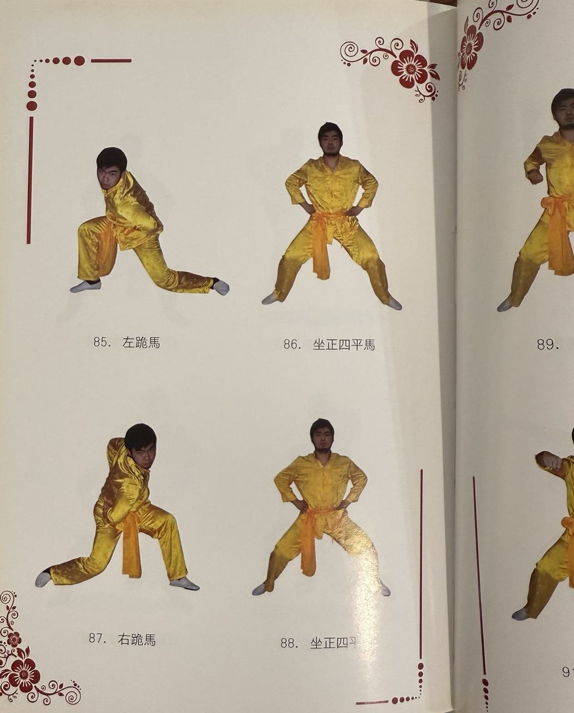

Sifu Angus Tse, the head coach of Tse Kung Fu Academy. He borned in the Kung Fu hub, Hong Kong.
He has over 20 years of experience in Choy Lee Fut Kung Fu.
Sifu Angus is authentic lineage in
Hung Sing Choy Lee Fut Fong Yuk Shu lineage (雄勝蔡李佛 - 方玉書系)
Sifu Angus, demostrated Ng Lun Ma on Grand Master Chu's book "Choy Lay Fut Kung Fu" (蔡李佛功夫) published in 2009.
Sifu Angus began his martial arts journey with Choy Lee Fut Kung Fu and later expanded his expertise by training in various styles, including Choi Mok with Sifu Lau Biu (劉標), Chow Gar Southern Praying Mantis with Sifu Hang Ng (吳煥亨), Muay Thai with Samkor Kiatmontep, and Brazilian Jiu-Jitsu.
📸 Follow us on Instagram for more updates!